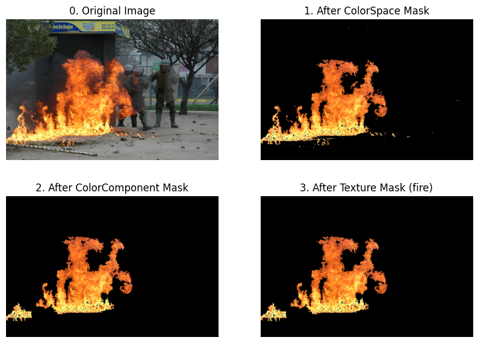
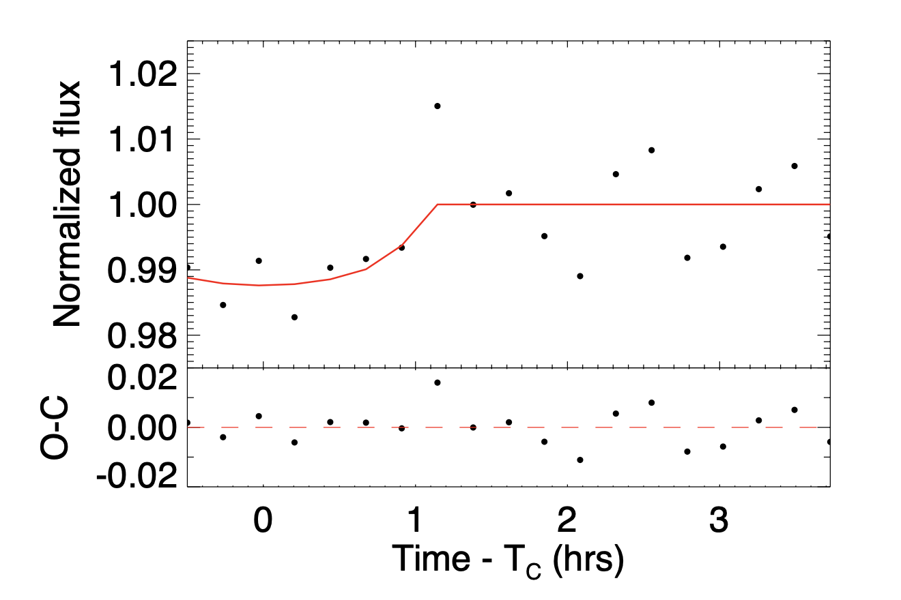
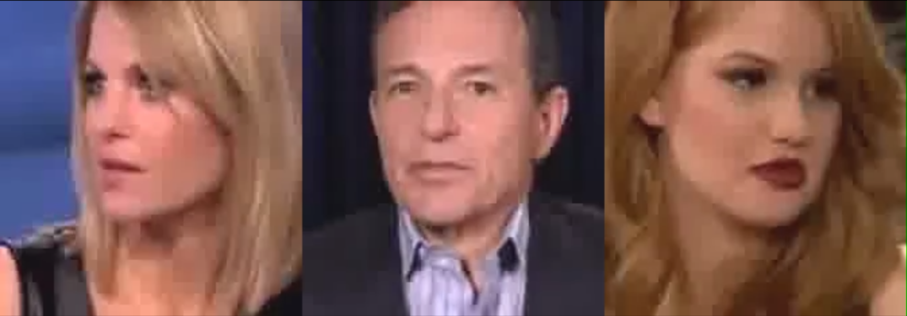
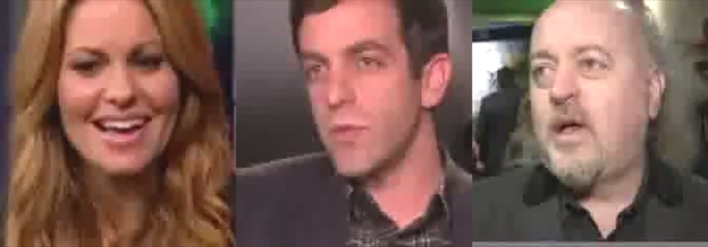
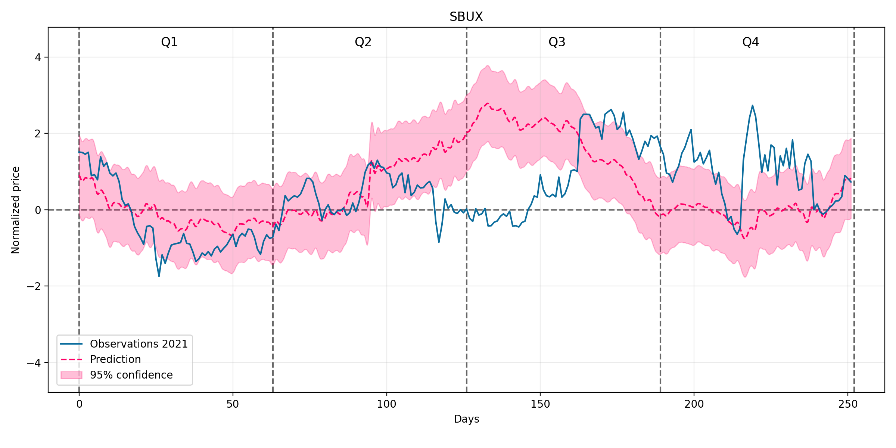
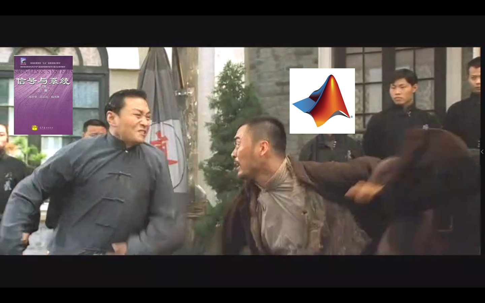

|
|

|
CS 496: AI for Science, Northwestern University, Spring 2024 [Paper]
The Event Horizon Telescope (EHT) collaboration's groundbreaking image of the M87 black hole ignited a new era in black hole imaging. This endeavor requires sophisticated image reconstruction algorithms that combine data from global telescopes. However, reconstructing black holes presents a unique challenge: it's an ill-posed inverse problem. Unlike conventional imaging, there are infinitely many possible solutions that fit the collected data. Traditionally, researchers address this by incorporating prior knowledge, which can be unreliable for groundbreaking discoveries like black holes. Additionally, quantifying the uncertainty in the reconstructed image is crucial for astronomers to assess its reliability. These two aspects, uncertainty quantification and dependence on explicit priors, represent the major hurdles in black hole imaging.
|
|  |
Digital Image Processing, Tsinghua University, Spring 2022 [Code] This is a non-deep learning fire detection pipeline inspired by this paper. Our pipeline comprises of three parts: color space classifier, color component classifier and texture classifier. Our model was trained and tested on the BoWFire Dataset and is able to detect fire from static images with an accuracy of 80%. |
|  |
Observational Astronomy, Tsinghua University, Spring 2022 [Code] [Paper] The Transiting Exoplanet Survey Satellite (TESS) is an all-sky survey mission led by MIT and NASA in search of exoplanets. A certain number of planet candidates (PC) discovered by TESS are not actual transiting exoplanets, which are usually referred as "false positives", therefore follow-up ground-based photometry is performed for verifications. We conduct ground-based transit photometry on two planets candidates declared in TESS, TOI-5278.01 and TOI-4439.01 with an 80cm telescope at Xinglong Observatory, P.R. China. Our data processing pipeline comprises of three parts: image reduction, aperture photometry and EXOFAST fit. For TOI-4439.01, our result is in accordance with TESS data, proving the exoplanet nature, while the EXOFAST fit did not converge for TOI-5278.01 due to low SNR of the light curve. |

|
Observational Astronomy, Tsinghua University, Spring 2022 [Code & Data] This repo contains my code and data for astronomical image reduction. The images were taken at Huairou, Beijing with a 25cm telescope of DoA. Targets include M13, M51, M3, etc. |
|   |
Introduction to Auditory-visual Information System, Tsinghua University, Fall 2021 [Code] Developed three algorithms that solve the following problems respectively: |
|  |
Stochastic Processes, Tsinghua University, Fall 2021 [Code] Built an algorithm using Guassian Process Regression to predict the stock prices from previous observations. This project is implemented with Python and Scikit Learn. |
|  |
Signals and Systems, Tsinghua University, Spring 2021 [Code] [Video] Developed an algorithm to create a video from a given set of video clips and a piece of background music to best match the clips' audio rhythm with the background music. This project is implemented with Matlab. |
|
Website template from Dr. Jon Barron |
© Tianao Li | Last update: Jul. 17, 2023